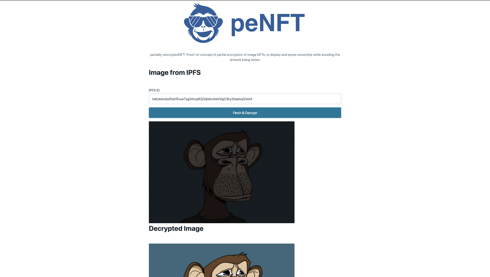

Why?
"Why did you pay for that? I can just copy and paste it"
This project explores a technique for making NFTs effectively uncopyable, while maintaining viewability and proof of ownership.
How It Works
1. User uploads an image
2. We distort it
3. We AES encrypt the original image and embed it in the EXIF metadata of the distorted image
4. We upload to IPFS
5. User passes the AES key into our demo site to view the real image
6. NFT Minting
Currently disabled due to gas complexities, but automatically mint an NFT using tatum.io's NFT Minting endpoint.Demo
Future Enhancements
- NFT - Build into NFT marketplace.
- Video - Similar approach, but make the video so that e.g only the keyframes are unencrypted, then use a custom player to play back with/without decryption key.
- PNG Support - Currently only supports JPEGs, but PNG support would use an identical method.